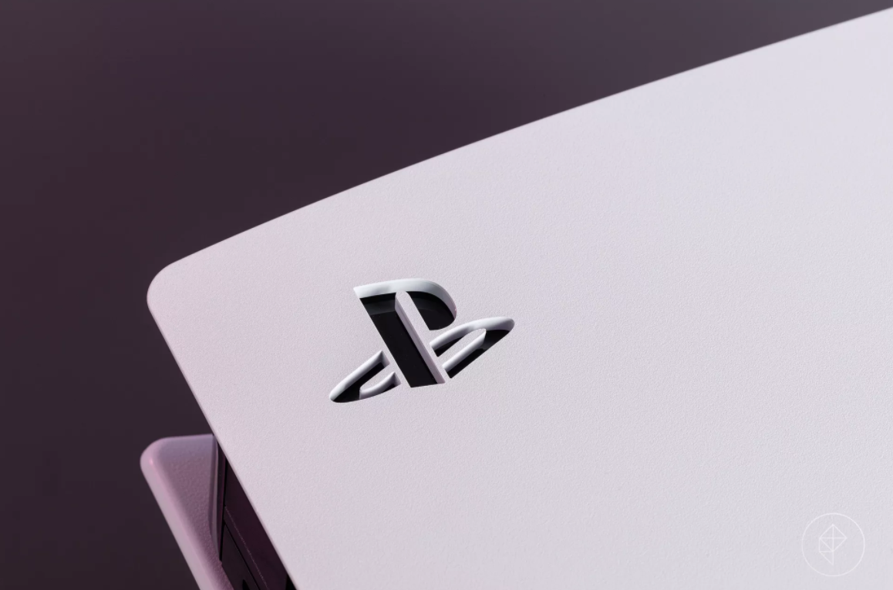
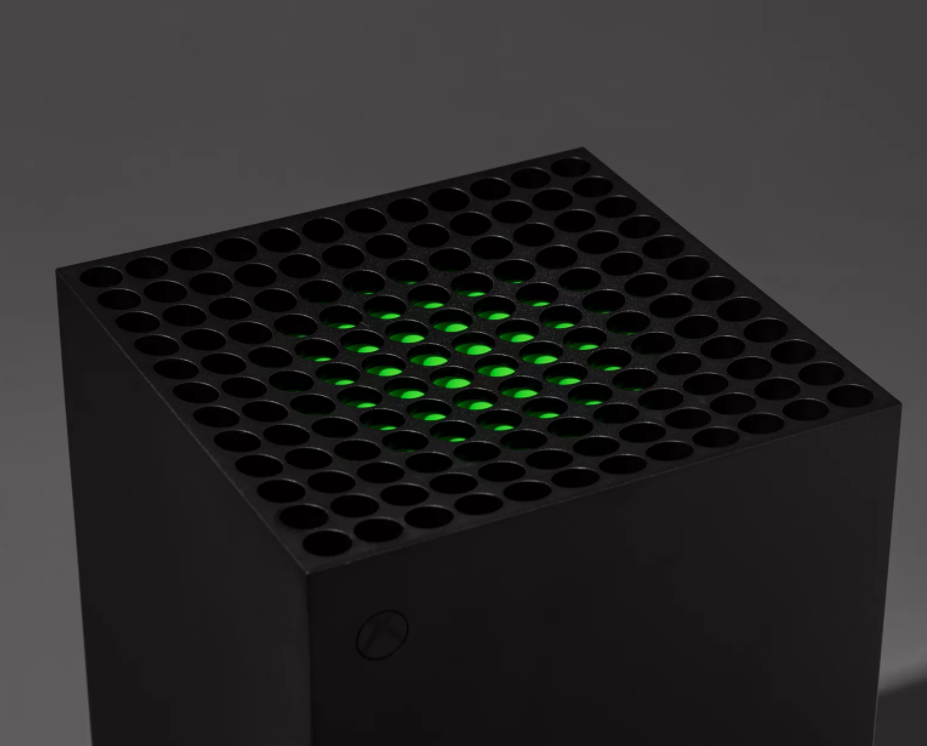
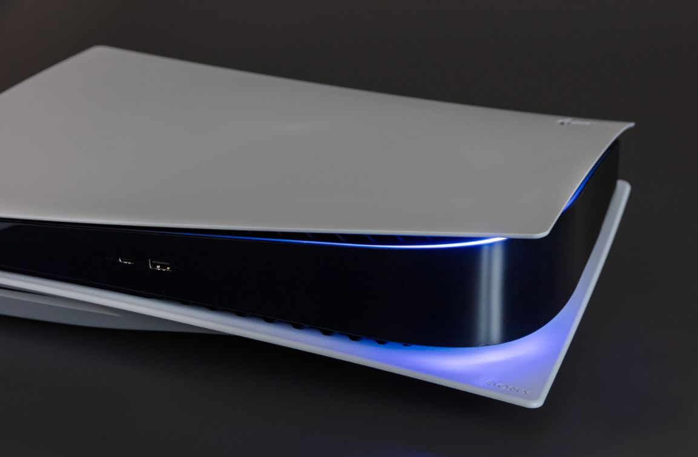
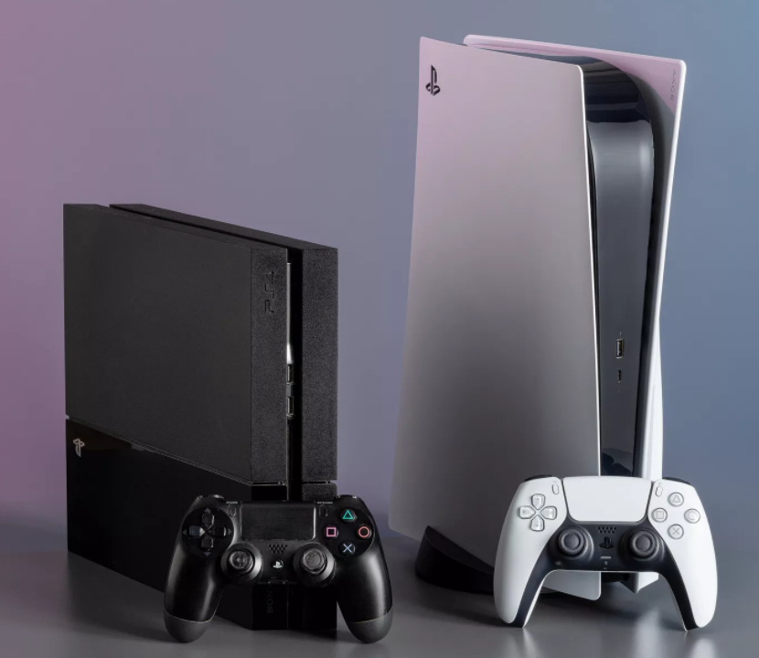
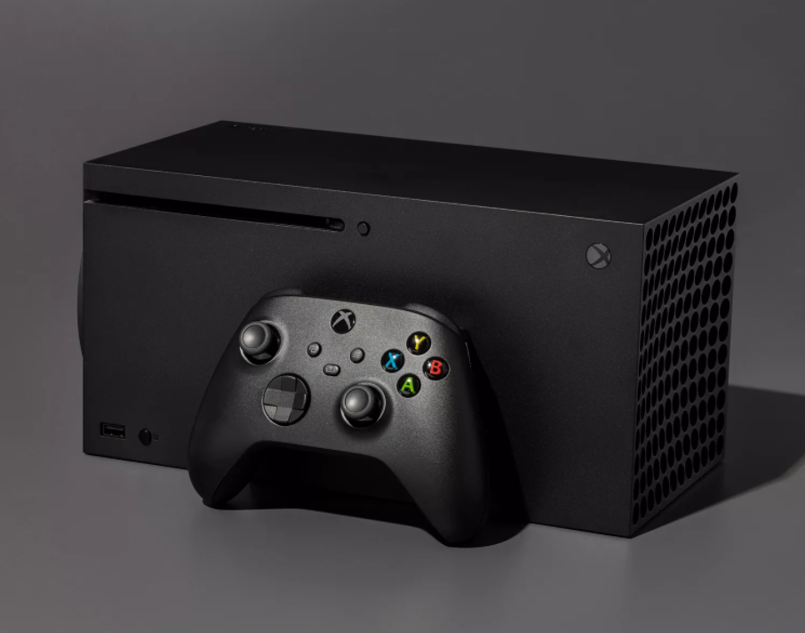
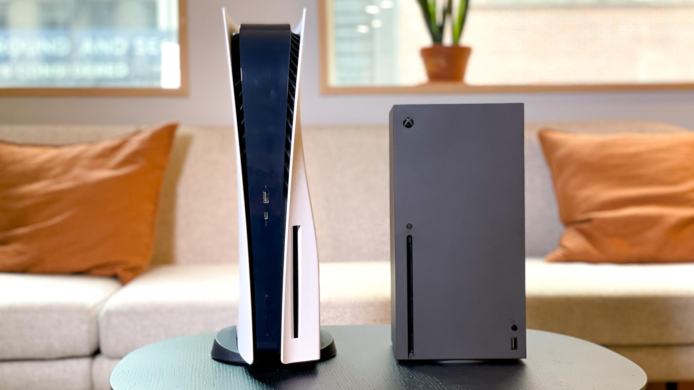

DESIGN


On Sony’s side of things, the PS5 itself boasts a futuristic and concept looking design which made many heads turn when it was officially unveiled. In fact, many people made fun of it and regarded that it looks like an existing router they already have in their homes. With that being said, after giving it some time after the unveiling, people started to appreciate it more as it brought a fresh breeze on the overall aesthetics, unlike the Xbox which we’ll get to in a minute.
The design was enough to bring attention to it, but the size was the cherry on top of all this hectic. Compared to the PS4, it is quite a big jump in terms of size in every shape or way. But this size comes with its benefits : the PS5 runs quietly which was a major complaint in the last generation. Alas, the times of where your console sounds like a jet that is about to take off will finally be a thing of the past! Overall, the design of the PS5 is very unique and Sony is trying its best to make sure it stands out from everything inside the living room, but that would be a bit of a problem as it would not fit into everyone’s houses because of the size and awkward shape.
It is without a doubt that the PS5 is a big boi and if you think that you can hide it pretty well in your existing living room or would like to admire it as it is, then this is definitely a console that you should consider picking up.
 
PS4 on the left, PS5 on the right
Meanwhile on Microsoft's side, the new Xbox Series-X looks like, well, a box. All jokes aside, this new iteration has a simple yet modern design and will have few less problems unlike the PS5, in fitting into the majority of people’s homes. Albeit that the design is bang average, but there are a few key and subtle designs that make it stand out.
For example, the top of the system has a vent for the cooling and inside of it has green accents which makes it look more cooler (no pun intended) than it already is. Another major win that Xbox has over the PlayStation is in size. The chassis of the Xbox is considerably smaller while at the same time, provides equal and more horsepower than its competition and also, run as quiet as possible at the same time.

So if you want to be as minimalist as possible without compromising on design and simplicity, then you can opt for the Xbox but if you want to go all out and make sure that everyone knows that you have got the latest and greatest, the you are better off with the PlayStation 5. Regardless of which you choose, you could never go wrong with either if these.

PS5 on the left, Xbox Series-X on the right